Seating
Sobreiro bench
Seven pine slats on two cork blocks or a recycled-steel frame.
- +2
- Length
- 1.6, 2.0 or 2.4 m
- Base
- Cork blocks or steel frame
- Weight
- 46 to 84 kg
- Fixing
- Freestanding or anchored
Cork · Pine · Recycled steel
Benches, planters, bike racks and bins for parks, schools and squares. Bolted, never welded, so every part comes apart again. Made in Santa Maria da Feira, Portugal.
As you scroll, the Sobreiro bench assembles itself from nine parts: two pressed-cork blocks and seven pine slats, fixed with eight bolts and one hex key.
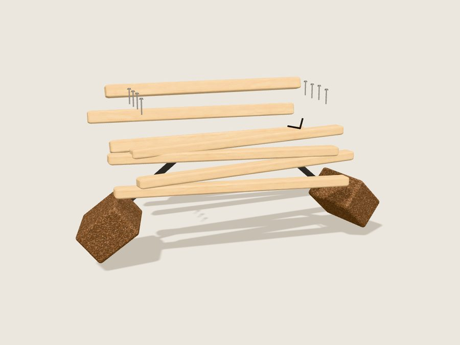
01 Loose parts
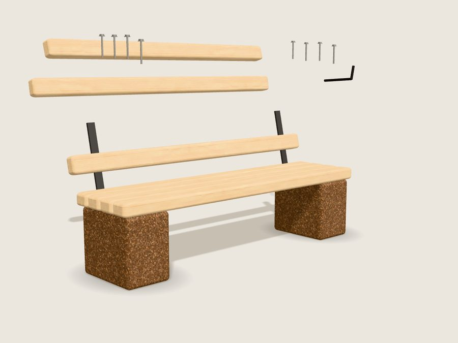
02 Blocks and seat
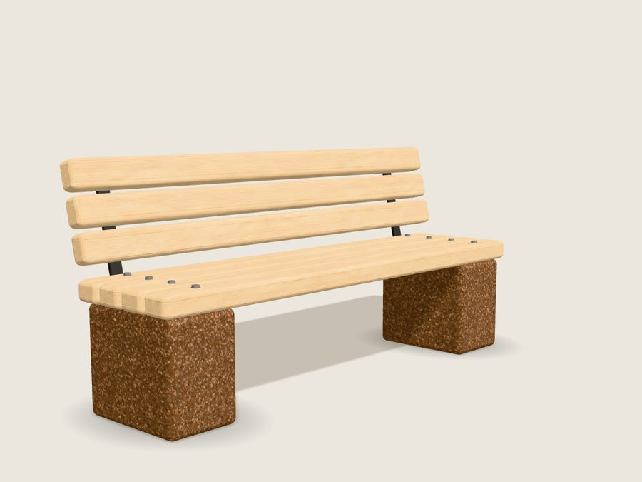
03 Bolted and finished
2 pressed-cork blocks · 7 maritime-pine slats · 8 stainless bolts · 1 hex key
Collections (04)
Every piece is put together from the same slats, blocks and bolts. Mix them across a park, then repair any of them with a single key.
Configure a bench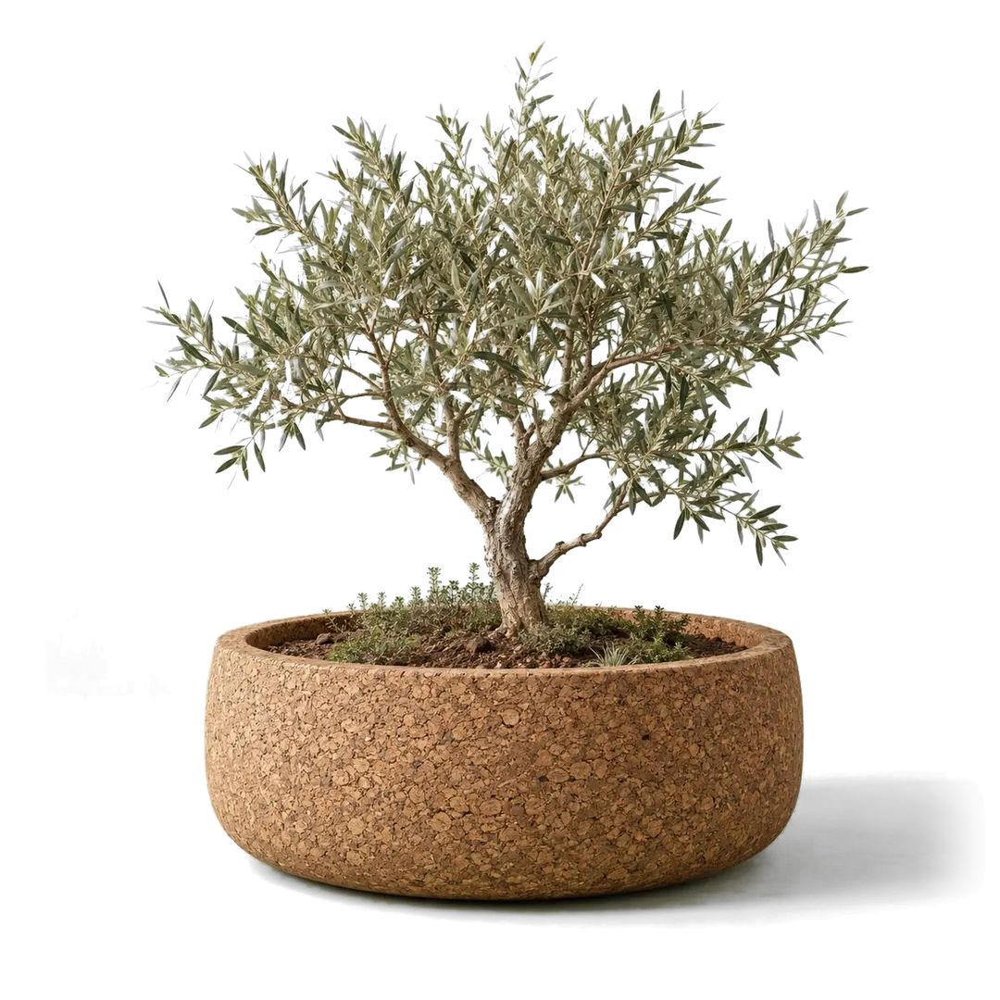
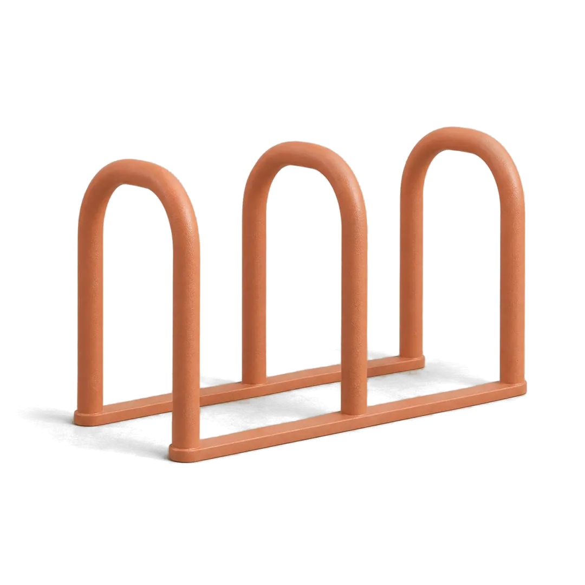
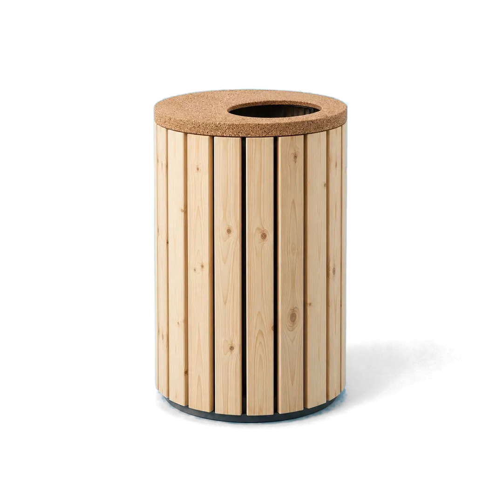
Materials (03)
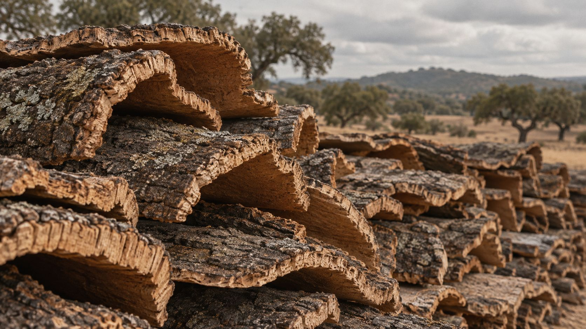
Stripped by hand from the cork oak every nine years. The tree is never cut down.
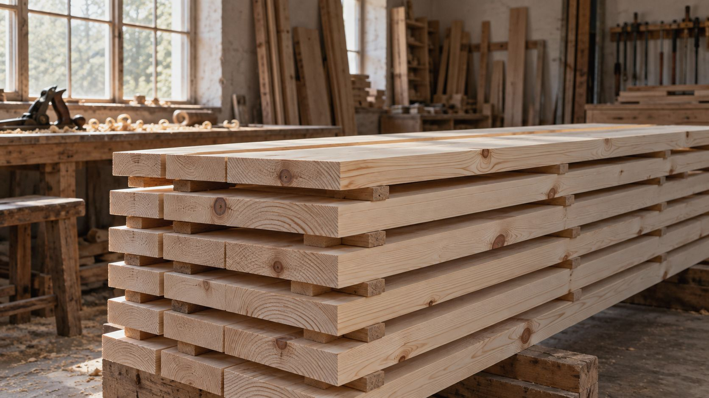
Maritime pine from managed forests in central Portugal, planed pale and oiled, never painted.
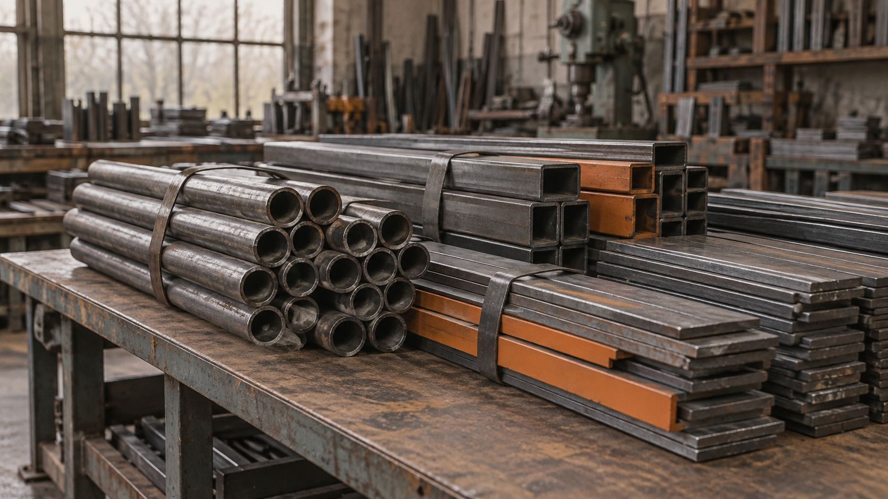
Frames bent from recycled tube and bolted rather than welded, so every part can come apart again.
Places (101)
Long benches under the trees, planters as soft edges, a bin at every gate.
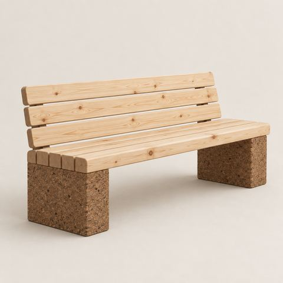
bench ×6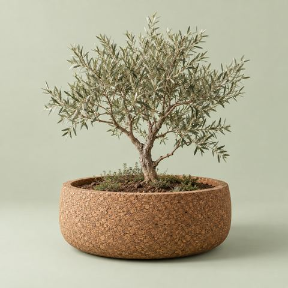
planter ×4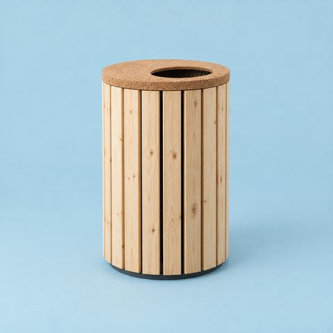
bin ×3(38) projects
Low benches for small legs, racks by the gate, and nothing that splinters.
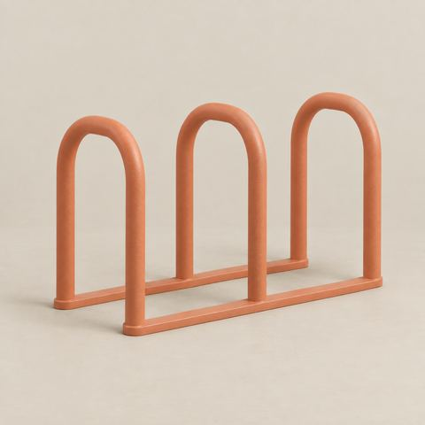
bike rack ×5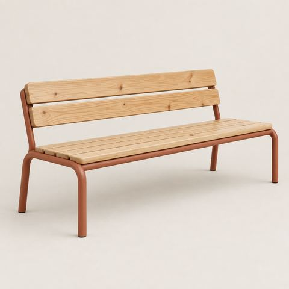
bench ×4(24) projects
Seating that turns a crossing into a place to stay for the afternoon.
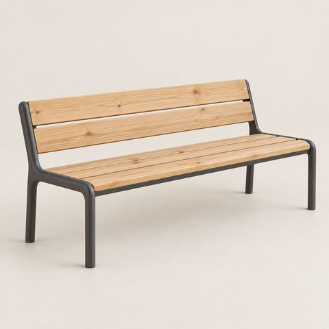
bench ×8(19) projects
Graphite frames and oiled pine that shrug off salt air and winter storms.
(11) projects
Quiet corners in the garden for lunch breaks and long waits.
(9) projects
Impact
25 Years of guarantee on every frame. One ring for every five. Slats and blocks unbolt with one key, so a worn part never retires a bench.
Configure
Pick a base and a length. We send back drawings, a quote and a sample block of cork, usually within a week.